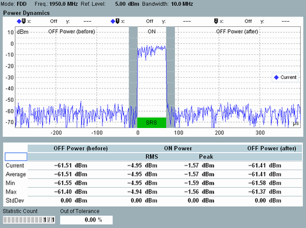

Measurement Results
All results of the LTE SRS measurement are displayed in a single view.
For a detailed description, see "Measurement Results".

Power dynamics results
The results can be retrieved via the following remote commands.
Remote command:The results can be retrieved via the following remote commands.
Remote command: